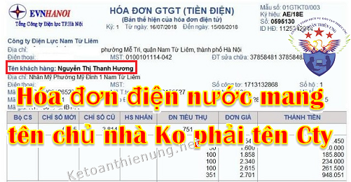

Hóa đơn tiền điện nước không mang tên Công ty mà lại mang tên Chủ nhà thì có được khấu trừ thuế GTGT? Chi phí tiền điện nước khi thuê nhà đó có được đưa vào phí hợp lý khi tính thuế TNDN? Kế toán Diệu Tâm xin trích các quy định mới nhất về vấn đề đó.
Hiện nay rất nhiều Công ty đi thuê nhà của cá nhân làm văn phòng, kho, xưởng ... nhưng các hóa đơn tiền điện, tiền nước, tiền mạng tên chủ nhà không phải mang tên Công ty.
=> Vậy Chi phí tiền điện nước của những hóa đơn tiền điện nước mang tên Chủ nhà không mang tên Công ty thì ĐƯỢC hạch toán vào CHI PHÍ khi tính thuế TNDN. -> Nhưng KHÔNG được khấu trừ thuế GTGT.
Chi tiết mời các bạn xem các quy định cụ thể như sau:
-----------------------------------------------------------------------------
1. Hóa đơn điện nước mang tên chủ nhà được đưa vào chi phí:
Căn cứ theo Điều 4 Thông tư 96/2015/TT-BTC -> Sửa đổi, bổ sung Điều 6 Thông tư số 78/2014/TT-BTC quy định cụ thể như sau:
“Điều 6. Các khoản chi được trừ và không được trừ khi xác định thu nhập chịu thuế:
2. Các khoản chi không được trừ khi xác định thu nhập chịu thuế bao gồm:
2.15. Chi trả tiền điện, tiền nước đối với những hợp đồng điện nước do chủ sở hữu là hộ gia đình, cá nhân cho thuê địa điểm sản xuất, kinh doanh ký trực tiếp với đơn vị cung cấp điện, nước không có đủ chứng từ thuộc một trong các trường hợp sau:
a) Trường hợp doanh nghiệp thuê địa điểm sản xuất kinh doanh trực tiếp thanh toán tiền điện, nước cho nhà cung cấp điện, nước không có các hoá đơn thanh toán tiền điện, nước và hợp đồng thuê địa điểm sản xuất kinh doanh.
b) Trường hợp doanh nghiệp thuê địa điểm sản xuất kinh doanh thanh toán tiền điện, nước với chủ sở hữu cho thuê địa điểm sản xuất kinh doanh không có chứng từ thanh toán tiền điện, nước đối với người cho thuê địa điểm sản xuất kinh doanh phù hợp với số lượng điện, nước thực tế tiêu thụ và hợp đồng thuê địa điểm sản xuất kinh doanh.
Như vậy: Để đưa chi phí điện nước khi thuê nhà (Hóa đơn điện nước mang tên chủ nhà) vào chi phí hợp lý thì cần:
- Nếu Cty trực tiếp thanh toán cho nhà cung cấp thì cần:
Hợp đồng thuê địa điểm; Hóa đơn tiền điện nước; Chứng từ thanh toán.
- Nếu Cty thanh toán với chủ nhà thì cần:
Hợp đồng thuê địa điểm; Hóa đơn tiền điện nước; Chứng từ thanh toán điện nước thực tế tiêu thụ với chủ nhà.
-> Bổ sung thêm là trên hợp đồng thuê địa điểm các bạn nên thể hiện rõ việc bên nào chi trả khoản tiền điện nước này nhé.
----------------------------------------------------------------------------------------------
Cách hạch toán chi phí điện nước khi thuê nhà:
- Các bạn hạch toán tiền điện, nước và tiền thuế GTGT đó vào Chi phí (Vì thuế GTGT không được khấu trừ)
|
Trường hợp, Công ty ký hợp đồng thuê căn hộ của cá nhân, trong hợp đồng quy định Công ty thanh toán phí quản lý, điện, nước và các dịch vụ khác cho Ban quản lý tòa nhà chung cư, hóa đơn do Ban quản lý tòa nhà xuất vẫn mang tên cá nhân chủ căn hộ thì: (Công văn số 93847/CT-TTHT ngày 16/12/2019 của Cục Thuế TP. Hà Nội) |
2. Hóa đơn tiền điện nước không mang tên Công ty không được khấu trừ thuế GTGT:
Căn cứ theo khoản 15 điều 14 Thông tư 219/2013/TT-BTC quy định cụ thể như sau:
"Điều 14: Nguyên tắc khấu trừ thuế giá trị gia tăng đầu vào:
15. Cơ sở kinh doanh không được tính khấu trừ thuế GTGT đầu vào đối với trường hợp:
- Hoá đơn không ghi hoặc ghi không đúng một trong các chỉ tiêu như tên, địa chỉ, mã số thuế của người bán nên không xác định được người bán;
- Hoá đơn không ghi hoặc ghi không đúng một trong các chỉ tiêu như tên, địa chỉ, mã số thuế của người mua nên không xác định được người mua"
Như vậy:
- Những hóa đơn tiền điện nước không mang tên công ty mà mang tên chủ nhà thì KHÔNG được khấu trừ thuế GTGT đầu vào.
Cách kê khai thuế GTGT:
=> Các bạn chỉ cần Kê khai:
Giá trị mua vào -> vào chỉ tiêu 23.
Tiền thuế GTGT -> vào chỉ tiêu 24.
=> Không được kê khai vào chỉ tiêu 25 trên tờ khai thuế GTGT 01/GTGT (vì không được khấu trừ thuế GTGT)
--------------------------------------------------------------------------------------------------
Chú ý:
- Quy định bên trên là trường hợp Công ty thuê nhà, thuê văn phòng của cá nhân.
- Trường hợp Công ty thuê nhà, văn phòng của Công ty khác thì yêu cầu Cty cho thuê đó phải xuất hóa đơn tiền điện nước nhé, cụ thể như sau:
Thu lại tiền điện nước phải xuất hóa đơn:
- Trường hợp Công ty có hợp đồng cho Công ty cổ phần APAX thuê mặt bằng với thỏa thuận Công ty cổ phần APAX thực hiện chi trả các khoản tiền điện, nước theo đúng số lượng tiêu thụ tại địa điểm thuê mặt bằng;
Công ty hiện đang đứng tên trên các hợp đồng ký kết với các nhà cung cấp điện, nước tại địa điểm cho thuê này (do Công ty cổ phần APAX đang dùng chung đường điện và nước với Công ty) thì khi thu tiền điện, nước Công ty phải thực hiện xuất hóa đơn GTGT và kê khai nộp thuế GTGT theo quy định tại Điều 16 và Phụ lục 04 Thông tư 39/2014/TT-BTC, các quy định về thuế suất thuế GTGT thực hiện theo hướng dẫn tại Thông tư 219/2013/TT-BTC đối với hoạt động cung cấp hàng hóa trên.
- Căn cứ Thông tư số 39/2014/TT-BTC ngày 31/3/2014 của Bộ Tài chính
+ Tại Khoản 1 Phụ lục 4 hướng dẫn lập hóa đơn một số trường hợp cụ thể.
“1. Tổ chức nộp thuế giá trị gia tăng theo phương pháp khấu trừ thuế khi bán hàng hóa, cung ứng dịch vụ phải sử dụng hóa đơn GTGT. Khi lập hóa đơn, tổ chức phải ghi đầy đủ, đúng các yếu tố quy định trên hóa đơn. Trên hóa đơn GTGT phải ghi rõ giá bán chưa có thuế GTGT, phụ thu và phí tính ngoài giá bán (nếu có), thuế GTGT, tổng giá thanh toán đã có thuế...”
- Căn cứ Thông tư số 219/2013/TT-BTC ngày 31/12/2013 của Bộ Tài chính:
+ Tại Điều 10 quy định thuế suất 5%:
“1. Nước sạch phục vụ sản xuất và sinh hoạt, không bao gồm các loại nước uống đóng chai, đóng bình và các loại nước giải khát khác thuộc đối tượng áp dụng mức thuế suất 10%.”
+ Tại Điều 11 quy định thuế suất 10%:
“Thuế suất 10% áp dụng đối với hàng hóa, dịch vụ không được quy định tại Điều 4, Điều 9 và Điều 10 Thông tư này.
Các mức thuế suất thuế GTGT nêu tại Điều 10, Điều 11 được áp dụng thống nhất cho từng loại hàng hóa, dịch vụ ở các khâu nhập khẩu, sản xuất, gia công hay kinh doanh thương mại...”
Công văn số 78837/CT-TTHT ngày 29/11/2018 của Cục Thuế TP. Hà Nội về hóa đơn tiền điện:
“Theo quy định tại khoản 7 Điều 3 Thông tư 26/2015/TT-BTC, bên cho thuê mặt bằng nếu đứng ra thanh toán tiền điện sau đó thu lại của bên thuê thì khi thu lại tiền điện phải lập hóa đơn, khai nộp thuế GTGT.
Trên hóa đơn thu lại tiền điện áp dụng thuế suất GTGT 10%.”
Công văn số 51360/CT-TTHT ngày 1/7/2019 của Cục Thuế TP. Hà Nội về việc xuất hóa đơn tiền điện nước cho cư dân các căn hộ chung cư:
“Theo nguyên tắc tại khoản 7 Điều 3 Thông tư 26/2015/TT-BTC, trường hợp công ty là chủ đầu tư tòa nhà chung cư có thu lại tiền điện nước của các cư dân trong chung cư thì khi thu tiền điện nước phải xuất hóa đơn căn cứ vào số lượng điện nước tiêu thụ của các cư dân.”
Công văn số 1281/CT-TTHT ngày 19/2/2019 của Cục Thuế TP. HCM về việc lập hóa đơn:
“Theo nguyên tắc tại khoản 7 Điều 3 Thông tư 26/2015/TT-BTC, trường hợp nhà thầu khi thi công công trình có sử dụng phần điện, nước do chủ đầu tư đứng tên thanh toán và sẽ thanh toán lại bằng cách cấn trừ vào tiền quyết toán công trình thì chủ đầu tư phải xuất hóa đơn đối với phần điện, nước do nhà thầu sử dụng.”
Công văn số 83920/CT-TTHT ngày 24/12/2018 của Cục Thuế TP. Hà Nội về hóa đơn đối với các khoản tiền điện, tiền nước:
“Theo quy định tại Điều 16 Thông tư 39/2014/TT-BTC, về nguyên tắc, khi thu lại tiền điện nước chi trả hộ, bên chi hộ phải xuất hóa đơn, kê khai nộp thuế GTGT.
Theo đó, trường hợp bên cho thuê mặt bằng đứng ra thanh toán hộ tiền điện nước thì khi thu lại tiền của bên thuê mặt bằng phải xuất hóa đơn, kê khai nộp thuế GTGT.”
Công văn số 2233/CT-TTHT ngày 16/1/2018 của Cục Thuế TP. Hà Nội về hóa đơn tiền điện đã nộp hộ:
“Căn cứ quy định tại khoản 7 Điều 3 Thông tư 26/2015/TT-BTC, Cục thuế TP. Hà Nội cho rằng: khi thu lại tiền điện đã chi hộ, bên cho thuê mặt bằng phải xuất hóa đơn giao cho bên thuê.
Trên hóa đơn phải ghi đầy đủ các chỉ tiêu và ghi theo đúng số lượng điện mà bên thuê mặt bằng đã tiêu thụ.”
-----------------------------------------------------------------------------------------------------
Các bạn muốn học thực hành làm kế toán tổng hợp trên chứng từ thực tế, thực hành xử lý các nghiệp vụ hạch toán, tính thuế, kê khai thuế GTGT. TNCN, TNDN... tính lương, trích khấu hao TSCĐ....lập báo cáo tài chính, quyết toán thuế cuối năm ...
có thể tham gia: Lớp học kế toán thực hành thực tế tại Kế toán Diệu Tâm
__________________________________________________
